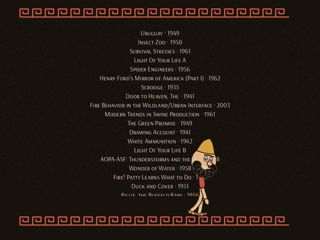
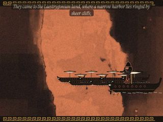
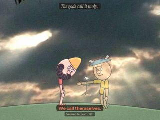
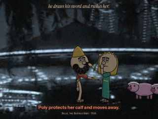
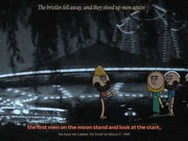
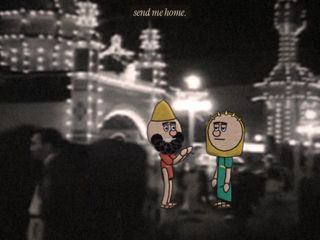
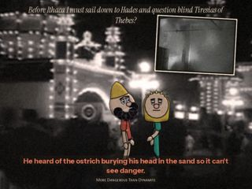
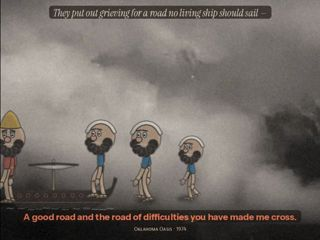

Case 14 of 18 · The Found Odyssey
Episode 4 · CIRCE
What if each scene needs only one line?
Episode 4, CIRCE: Book 10, 6:30, re-cut so each scene turns on one fulcrum line.
How it was made
- Find the line where power shifts in each scene.
- Play everything else wide; go tight only for the line and hold after it.
- Silence the score two seconds before the line; one low note after it.
- Remove all ink notes and labels.
What this case teaches
- "I don't need all of the lines, I need the line." One rule changes framing, gesture, sound and writing at once.
- A single held gesture can carry meaning that a caption used to carry.
- Taking things away (notes, labels) is tested as carefully as adding them.
How it differs. Episodes 1 to 3 added devices. Episode 4 removes them and keeps one line.
First sheet and last sheet
Where the stage started and where it finished.


The sheets, step by step
Grouped by working session. Click any sheet to view it full size; use the arrow keys to move through them.
Step 1Check frameOct 18 22:49 · 14 sheets



Show 10 more from this step









Step 2Check frameOct 18 22:49 · 2 sheets

What came out of it


Read the record
Carried forward
The one-line structure stays, and a second rule is added: colour.